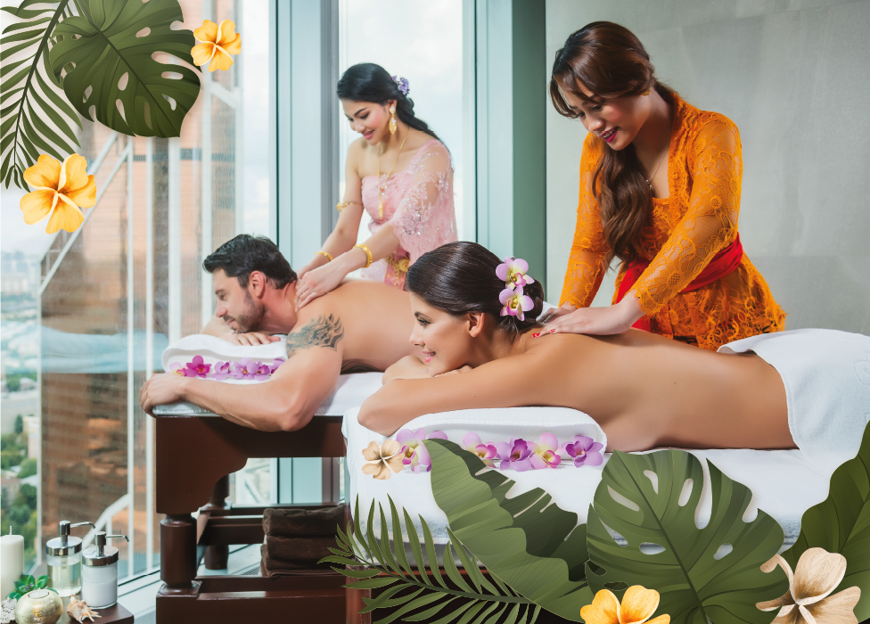
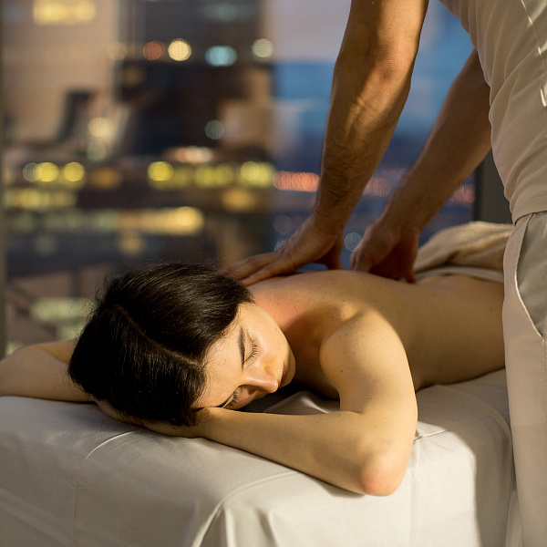
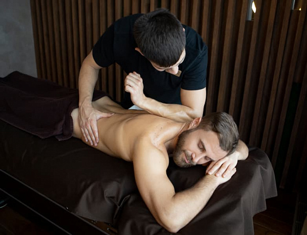

Расслабляющий массаж |
Общий оздоровительный массаж |
Спортивный массаж |
|  |  |  |
|
Этот вид массажа необходим каждому, кто хочет отключиться от проблем и убрать дискомфорт в мышцах. Мягкие поглаживающие движения снимут усталость и уберут скованность мышц. Вы почувствуете себя отдохнувшим и полным сил. Мы рекомендуем проводить такой массаж курсом из нескольких процедур. Этот вид массажа без проработки. |
Общий массаж тела – это лучший способ с удовольствием восстановиться после рабочего дня. Он укрепляет тело, приводит в порядок мысли и нервы, повышает настроение. Этот массаж проводится с проработкой мышечных групп, с акцентом на определенные зоны. Мы рекомендуем проводить такой массаж курсом из нескольких процедур. |
Если вам предстоит занятие силовыми тренировками или необходимо расслабить мышцы после серьезных нагрузок, спортивный массаж – то, что вам необходимо. Такой массаж уменьшает влияние молочной кислоты на организм, снижает нагрузку на сердечно-сосудистую систему, повышает выносливость организма, увеличивает работоспособность, снимает усталость и восстанавливает общий тонус после повышенных нагрузок. Спортивный массаж требует большой физической силы, поэтому рекомендованный мастер - мужчина. Мы рекомендуем проводить такой массаж курсом из нескольких процедур. |